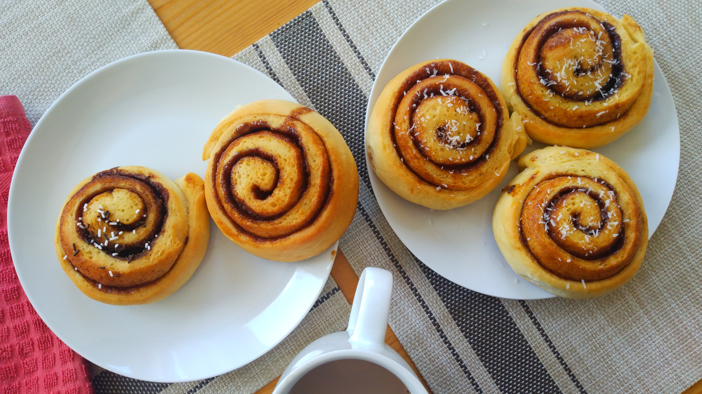

Roles de Canela
- Preparación: 15 min
- Tiempo total de levado: 1 - 2 hr
- Horneado: 15 - 20 min
- Porciones: 12 roles
INGREDIENTES
PARA LA MASA
- 2 ¾ tazas (385 g) de harina de trigo para pan o de todo uso
- 2 ¼ cucharaditas (7 g) de levadura seca activa
- 1 cucharadita (6 g) de sal
- ¼ taza (60 g) de azúcar
- 2 cucharadas (30 g) de mantequilla sin sal o de aceite vegetal
- ½ taza (125 g) de agua
- ¼ taza (60 g) de leche
- 1 huevo
PARA EL RELLENO
- 1 cucharada (15 g) de aceite vegetal o de mantequilla sin sal derretida
- ⅔ tazas (150 g) de azúcar moreno
- 1 cucharada de canela en polvo
- coco rallado para decorar (opcional)
DESCRIPCIÓN
Esta receta es la más sencilla de las variaciones de los roles o rollos de canela. A mi me gusta disfrutarlos sin betún adicional, de manera que el sabor de la canela es fuertemente predominante. Son deliciosos para desayunar, o para merendar con un café con leche.
INSTRUCCIONES
- En un recipiente hondo, mezclar la harina, levadura, sal y azúcar. Reservar.
- En otro recipiente adecuado para horno de microondas, mezclar la mantequilla (o aceite) , agua y leche y calentar hasta que la mantequilla se comience a derretir. Esta mezcla debe estar tibia al tacto, sin quemar. Incorporar gradualmente esta mezcla y el huevo a los ingredientes secos del paso anterior. Mezclar con una cuchara de madera hasta obtener una masa homogénea y seguir mezclando hasta que la masa se despegue de las paredes del recipiente. Si hace falta, añadir más harina o más agua.
- Volcar la masa sobre una superficie de trabajo limpia y enharinada. Amasar por aproximadamente 8 minutos hasta obtener una masa elástica y tersa. Dar forma de bola y colocar la masa en un recipiente hondo ligeramente engrasado. Cubrir el recipiente con plástico y dejar levar la masa hasta que duplique su tamaño.
- Cuando la masa haya dupicado su tamaño, deshincharla suavemente y pasarla a la mesa de trabajo para extenderla con un rodillo en forma de rectángulo de aproximadamente 40 x 20 cm.
- Para preparar el relleno mezclar en un recipiente pequeño el azúcar moreno con la canela en polvo. Untar la superficie del rectángulo con la mantequilla suavizada (o aceite) y cubrirla con el relleno. Enrollar el rectángulo de forma apretada y cortarlo en aproximadamente 12 porciones del mismo grosor.
- Colocar los roles en una bandeja cubierta con papel para horno, dejando entre ellos espacio suficiente para que leven (aproximadamente 4 - 5 cm). Cubrir los roles con un plástico y dejarlos levar hasta que dupliquen su tamaño.
- Precalentar el horno a 190 °C (375 °F). Hornear los roles por aproximadamente 15 - 20 minutos o hasta que tengan un color ligeramente dorado. Sacar del horno y dejar enfriar en una rejilla.